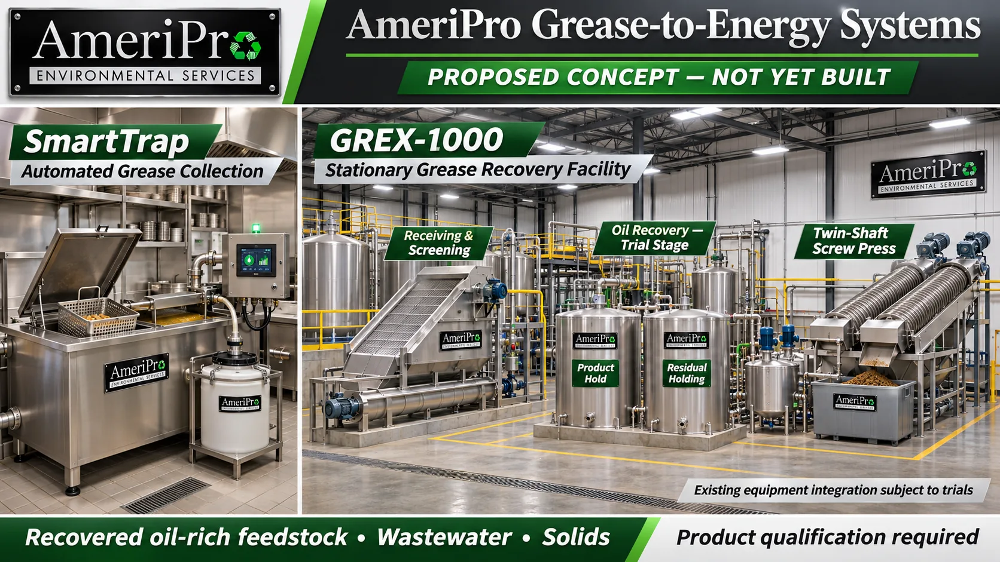

FLOOD RESPONSE TEAM
MFP-500 + DryForce
Bulk-water pumping and industrial drying as coordinated, independently deployable trailer concepts.
Mobile response, resource recovery and modular infrastructure. Explore the next systems in development.
Explore the concepts →
Each concept links to its design study, interactive planning tools and supporting documents. Existing water-treatment work remains accessible from its own portal.
Bulk-water pumping and industrial drying as coordinated, independently deployable trailer concepts.
Generator-and-battery architecture with an engine-off / recharge planner. Study targets: 60 kWh nominal storage, 40 kW inverter and 45 kW generator.
Source-specific washwater treatment for qualified nonpotable reuse, with product hold and residuals storage in the water-balance model.
Automated restaurant grease recovery paired with a proposed permanent receiving, separation and dewatering facility, evaluating AmeriPro’s existing screw press and separator. Product is a candidate fuel feedstock pending qualification.
Forklift- and crane-placeable duplex horizontal centrifugal pump skid (2 × 200 GPM @ 120 ft TDH study baseline, 2 × 15 HP VFD) for tank-farm transfer, plant utility boosting and screened residual handling.
Track restaurant collection, oil recovery and residuals as one system. The study models the batch mass balance and product economics.

Recovery and dewatering produce a candidate oil-rich material. Fuel-grade certification, further conversion, buyer acceptance and receiving arrangements are separate development gates.
Open the new study →A compact 8 ft × 5 ft structural steel skid with duplex centrifugal pumps, 6 in flanged manifolds and local VFD/HMI controls.
Test lead/standby vs. parallel operation, total dynamic head, shaft BHP, VFD electrical kW and available NPSH margin across booster, Reclaim-25 and industrial transfer presets.
Open hydraulic planner →Review equipment tags (P-1701A/B, HDR-1701/1702, CP-1701), the 2,850 lb dry / 3,250 lb wet mass study and the $62,000 base ($74,400 w/ contingency) budget.
Read concept design → · BOM & costs →Continue to the MWTP-50C, MWTP-50 and MWTP-250 program and its engineering tools.
Open water-treatment portal →